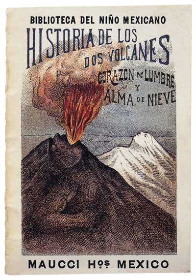
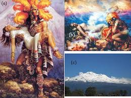
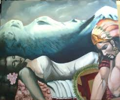
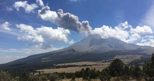

LA LEYENDA DE LOS VOLCANES


Hace ya miles de años, cuando el Imperio Azteca estaba en su esplendor y dominaba el Valle de México, como práctica común sometían a los pueblos vecinos, requiriéndoles un tributo obligatorio. Fue entonces cuando el cacique de los Tlaxcaltecas, acérrimos enemigos de los Aztecas, cansado de esta terrible opresión, decidió luchar por la libertad de su pueblo.
El cacique tenía una hija, llamada Iztaccíhuatl, era la princesa más bella y depositó su amor en el joven Popocatépetl, uno de los más apuestos guerreros de su pueblo.
Ambos se profesaban un inmenso amor, por lo que antes de partir a la guerra, Popocatépetl pidió al cacique la mano de la princesa Iztaccíhuatl. El padre accedió gustoso y prometió recibirlo con una gran celebración para darle la mano de su hija si regresaba victorioso de la batalla.
El valiente guerrero aceptó, se preparó para partir y guardó en su corazón la promesa de que la princesa lo esperaría para consumar su amor.

Al poco tiempo, un rival de amores de Popocatépetl, celoso del amor de ambos se profesaban, le dijo a la princesa Iztaccíhuatl que su amado había muerto durante el combate.
Abatida por la tristeza y sin saber que todo era mentira, la princesa murió.
Tiempo después, Popocatépetl regresó victorioso a su pueblo, con la esperanza de ver a su amada. A su llegada, recibió la terrible noticia sobre el fallecimiento de la princesa Iztaccíhuatl.
Entristecido con la noticia, vagó por las calles durante varios días y noches, hasta que decidió hacer algo para honrar su amor y que el recuerdo de la princesa permaneciera en la memoria de los pueblos.
Mandó construir una gran tumba ante el Sol, amontonando 10 cerros para formar una enorme montaña.
Tomó entre sus brazos el cuerpo de su princesa, lo llevó a la cima y lo recostó inerte sobre la gran montaña. El joven guerrero le dio un beso póstumo, tomó una antorcha humeante y se arrodilló frente a su amada, para velar así, su sueño eterno.
Desde aquel entonces permanecen juntos, uno frente a otro. Con el tiempo la nieve cubrió sus cuerpos, convirtiéndose en dos enormes volcanes que seguirán así hasta el final del mundo.

La leyenda añade, que cuando el guerrero Popocatépetl se acuerda de su amada, su corazón que guarda el fuego de la pasión eterna, tiembla y su antorcha echa humo. Por ello hasta hoy en día, el volcán Popocatépetl continúa arrojando fumarolas.